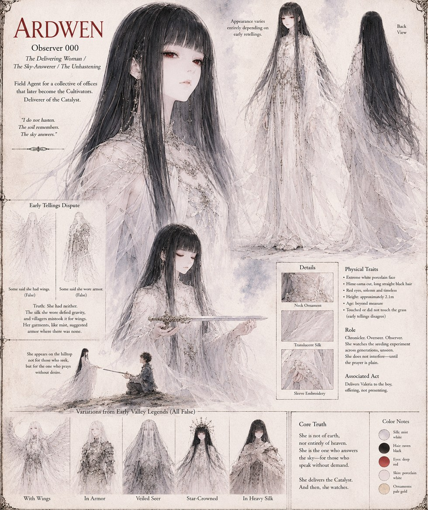

Ardwen
Observer 000 · The Delivering Woman · The Sky-Answerer · The Unhastening
Known in the earliest tellings as the Delivering Woman, the Sky-Answerer, the Unhastening — and, in the field reports she doesn't yet know are being kept about her, Observer 000. A field agent for the collective that will eventually call itself the Cultivators, she delivers the sword Valeria to the boy on the hilltop as an offering, not a gift pressed on him. She watches the rest of his life unfold from a distance, unseen, and doesn't interfere again unless a prayer is asked of her plainly.
“I do not hasten. The soil remembers. The sky answers.”
Appears In

Related Subjects


Related Records

Observer 000, watching.